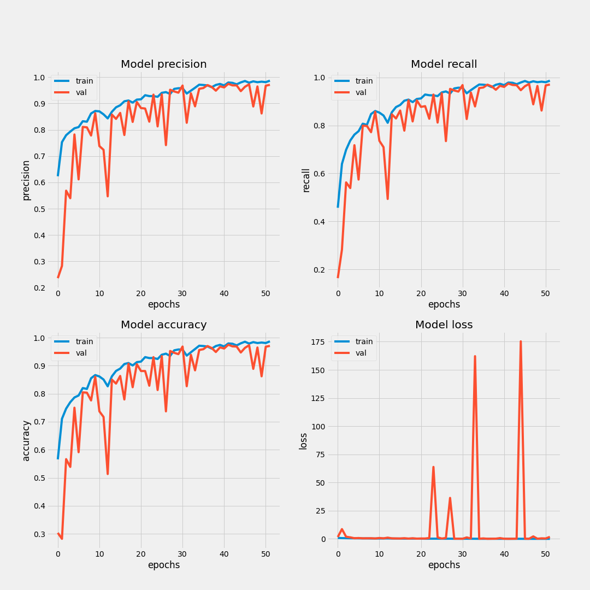
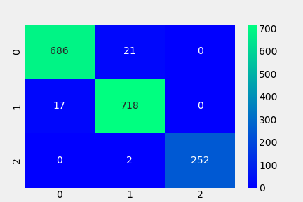

Research Report
This section contains various reports about the experiments carried out during
the model design process.
Detailed research documentation is available
here
You can also see these Experiment logs at
Wandb.ai Workspace
Reports
Various Model Comparisons
Training Accuracy
Training Loss
Validation Accuracy
Validation Loss
Custom Model Metrics
See the custom Model Architecture
Here
Hypertuning Parameter Correlations
Hypertuning Graph
Training Log

Confusion Matrix
